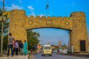

Khyber Pakhtunkhwa(kp)
Here are some of the information about kp
- Khyber Pakhtunkhwa(kpk)
- kpk is the province of Pakistan.Pakistan has total five provinces.Which are
given below.
- Kyber puhtoon khwa
- Punjab
- Sindh
- Balochistan
- Gilgit
Puhtoon khwa is the most beautiful province of Pakistan.

To learn more about kp.click below link
Kp website